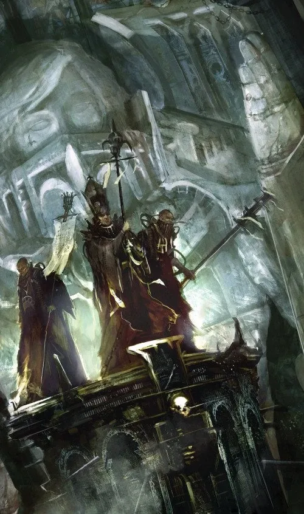
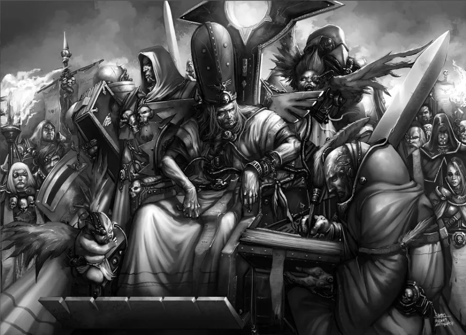
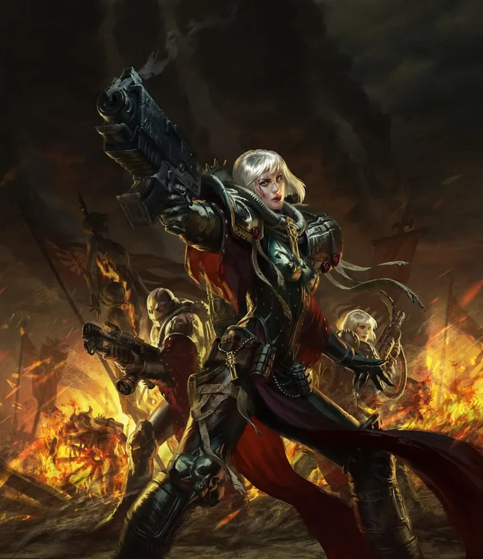
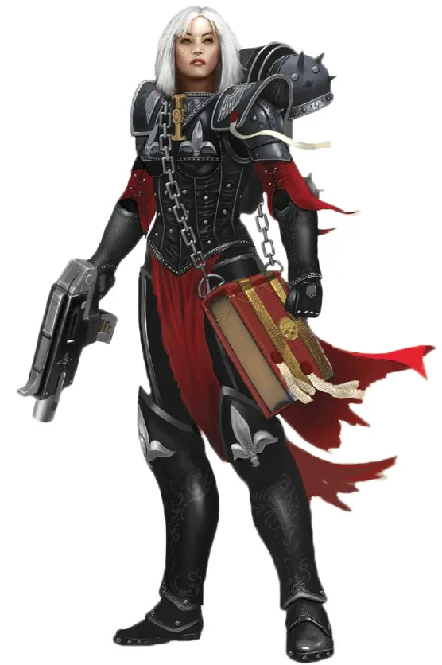

01ภาพรวม
Age of Apostasy (เอจ ออฟ อะพอสตาซี — "ยุคแห่งการละทิ้งศรัทธา") คือช่วงสงครามกลางเมืองครั้งใหญ่ครั้งที่สองของจักรวรรดิในต้นสหัสวรรษที่ 36 นักประวัติศาสตร์ของจักรวรรดิแบ่งเป็นสองช่วง:
Reign of Blood (ยุคแห่งเลือด)
การปกครองแบบเผด็จการของ High Lord Goge Vandire ที่ยึดทั้งรัฐบาลและศาสนาไว้ในมือคนเดียวเกือบร้อยปี
Plague of Unbelief (โรคระบาดแห่งความไม่เชื่อ)
ไม่กี่สิบปีหลังจากนั้น Cardinal นอกรีต Bucharis แห่งดาว Gathalamor ตั้งตนเป็นใหญ่และก่อสงครามอีกครั้ง
หลังยุคนี้คือการปฏิรูปครั้งใหญ่ที่สุดหลัง Heresy และเป็นต้นกำเนิดของสิ่งที่เราเห็นในยุค 40K หลายอย่าง โดยเฉพาะ Sisters of Battle
02ศาสนาที่มีอำนาจเหนือรัฐ
หลัง Heresy ศาสนาบูชาจักรพรรดิ (Imperial Cult) เติบโตจนกลายเป็นองค์กร Adeptus Ministorum หรือ Ecclesiarchy ในต้นสหัสวรรษที่ 34 มันมีอำนาจแทบเบ็ดเสร็จ — เก็บภาษีจากทุกดาว กำหนดนโยบายของสภา High Lords และผู้นำศาสนาสูงสุด (Ecclesiarch) ถูกมองว่าพูดด้วยเสียงของจักรพรรดิเอง
ฝ่ายข้าราชการ Administratum ไม่พอใจที่อำนาจถูกแย่ง จึงใช้วิธีแทรกคนของตัวเองเข้าไป และทำให้ผู้นำศาสนาที่ได้รับแต่งตั้งเป็นคนอ่อนแอหรือฉ้อฉล ทั้งสององค์กรแย่งอำนาจกันนานนับพันปี
- ศาสนาย้ายศูนย์กลางไปยังดาว Ophelia VII และสร้างกองทัพของตัวเองชื่อ Frateris Templar ที่โหดร้ายและหยิ่งยโส
- Ecclesiarch Greigor XI ย้ายกลับ Terra ด้วยการขึ้นภาษีมหาศาลจนดาวหลายดวงอดอยาก ก่อนตายจากอาหารเป็นพิษอย่างมีเงื่อนงำ
- ต้นสหัสวรรษที่ 36 พายุ Warp ทวีความรุนแรงเป็นสิบเท่า ดาวต่าง ๆ ถูกตัดขาด Chaos, Ork และ Drukhari ฉวยโอกาสโจมตี ผู้คนเชื่อว่าวันสิ้นโลกมาถึงแล้ว

03Goge Vandire ยึดอำนาจ
Goge Vandire เป็น Master of the Administratum คนที่ 361 ขึ้นสู่อำนาจด้วยการติดสินบน ข่มขู่ และลอบสังหาร เขาเลือก Ecclesiarch ที่อ่อนแอที่สุดชื่อ Paulis III ขึ้นตำแหน่ง แล้วบุกเข้าวังของ Ecclesiarch สังหาร Paulis และประกาศตัวเป็นทั้ง Ecclesiarch และ Master of the Administratum พร้อมกัน — ครั้งแรกที่คนคนเดียวคุมทั้งรัฐและศาสนา
หลังจากนั้นเขากวาดล้าง Cardinal ที่ต่อต้าน อ้างว่าได้ยินเสียงจักรพรรดิในภวังค์ และออกคำสั่งไร้เหตุผลทำร้ายประชาชนทั้งภาค เขายังใช้นักฆ่า Culexus ทำลายพลังจิตของ Lord Phaedrus หัวหน้า Astra Telepathica แล้วขู่ให้รับใช้ จนคุมระบบสื่อสารของจักรวรรดิได้ทั้งหมด

04Daughters of the Emperor
บนดาวเกษตรห่างไกลชื่อ San Leor มีคณะนักบวชหญิงที่ฝึกการรบเพื่อบูชาจักรพรรดิ ชื่อ Daughters of the Emperor นำโดย Alicia Dominica เมื่อ Vandire มาเยือน พวกเธอปฏิเสธไม่ให้เข้า เพราะไม่เชื่อว่าเขารับใช้จักรพรรดิจริง
Vandire ท้าให้ Dominica ยิงเขา กระสุนสะท้อนออกไปเพราะเขาแอบสวมเครื่องสร้างเกราะพลังงาน แต่อ้างว่าจักรพรรดิปกป้องเขา คณะนักบวชที่ไม่เคยเห็นเทคโนโลยีนี้จึงยอมเชื่อ Vandire เปลี่ยนชื่อพวกเธอเป็น Brides of the Emperor และใช้เป็นองครักษ์ส่วนตัว เมื่อสภา Cardinal พยายามลอบสังหารเขา พวกเธอเข้าไปในห้องประชุม ปิดประตู และออกมาหนึ่งชั่วโมงต่อมาพร้อมศีรษะของ Cardinal ทุกคน


05Sebastian Thor และ Confederation of Light
ความหวังเกิดขึ้นบนดาวห่างไกลชื่อ Dimmamar นักเทศน์ผู้ถ่อมตนชื่อ Sebastian Thor เริ่มพูดต่อต้านความอยุติธรรมของ Vandire ผู้คนแห่มาฟังจากทั่วทุกที่ นักฆ่าที่ถูกส่งมาหลายคนกลับใจมาปกป้องเขา
Vandire ส่งกองทัพ Frateris Templar ขนาดมหึมามาทำลาย Dimmamar แต่กองเรือถูกพายุ Warp ฉีกเป็นชิ้น ๆ ระหว่างทาง พายุนี้ยังคงอยู่จนถึงปัจจุบันในชื่อ "Storm of the Emperor's Wrath" ผู้คนเชื่อว่าเป็นสัญญาณจากจักรพรรดิ
สมาชิกของ Confederation of Light นิกายที่ถูกห้ามมาตั้งแต่สงครามศาสนาในสหัสวรรษที่ 32 มาพบ Thor และรวมกำลังกัน ขบวนการปฏิรูปแพร่ไปทั่ว
06Terran Crusade และจุดจบของ Vandire
Mechanicus ยื่นคำขาด
Fabricator-General Gastaph Hedriatix เรียกร้องให้ Vandire รับผิดชอบ Vandire ตอบโต้ด้วยการยุบสภา High Lords และสั่งโจมตี Space Marine กับ Mechanicus ที่ต่อต้าน
Terran Crusade
กองทัพ Mechanicus นำโดย Space Marine 4 Chapter — Imperial Fists, Fire Hawks, Soul Drinkers และ Black Templars — บุก Terra และปิดล้อมวังของ Ecclesiarch
Custodes ออกจากความเงียบ
Adeptus Custodes ที่ปิดตัวเฝ้าบัลลังก์มาตลอดเพิ่งรู้ว่าเกิดอะไรขึ้น Centurion ของ Custodes เดินเข้าไปหา Brides of the Emperor โดยไม่มีอาวุธ ขอให้พวกเธอเลิกปกป้อง Vandire เมื่อพูดไม่สำเร็จ เขาจึงพาพวกเธอไปเข้าเฝ้าจักรพรรดิบน Golden Throne
ดาบของ Alicia Dominica
หลังกลับออกมา ไม่มีใครรู้ว่าพวกเธอเห็นหรือได้ยินอะไร แต่ Brides of the Emperor ตระหนักว่าถูกหลอก Alicia Dominica เดินเข้าห้องของ Vandire ประกาศว่าเขาเป็นคนนอกรีต และตัดศีรษะเขา Reign of Blood สิ้นสุดลง
07การปฏิรูปหลังยุคนอกรีต
Sebastian Thor เป็น Ecclesiarch
Thor ได้รับเลือกเป็นผู้นำศาสนาและปฏิรูปครั้งใหญ่ที่สุดหลัง Heresy ภายหลังเขาได้รับการยกย่องเป็นนักบุญ
Decree Passive
กฎใหม่ห้ามคนคนเดียวดำรงตำแหน่งทั้ง Ecclesiarch และ Master of the Administratum และห้ามศาสนามี "ชายติดอาวุธ" (men under arms)
Adepta Sororitas
เพื่อเลี่ยงข้อห้าม "ชายติดอาวุธ" ศาสนาจึงตั้งกองทัพที่เป็นผู้หญิงทั้งหมด Daughters of the Emperor กลายเป็น Orders Militant ของ Adepta Sororitas ซึ่งแต่ละคณะสืบสายจากพี่น้องรุ่นแรก เช่น Order of the Ebon Chalice ของ Alicia Dominica
Ordo Hereticus
Inquisition ตั้งฝ่ายใหม่เพื่อล่าคนนอกรีตและความฉ้อฉลภายในจักรวรรดิเอง โดยมี Sisters of Battle เป็นกองกำลังติดอาวุธ
แม้กระนั้นความวุ่นวายยังไม่จบ หลายสิบปีต่อมา Cardinal Bucharis แห่ง Gathalamor ก่อกบฏจนเกิด Plague of Unbelief ก่อนจะถูกปราบในที่สุด ยุคนี้ทิ้งบทเรียนว่าศัตรูที่อันตรายที่สุดอาจสวมชุดนักบวช — ทุกวันนี้ Inquisition ยังเฝ้าระวัง Ecclesiarchy อย่างใกล้ชิด
08แหล่งข้อมูลและหมายเหตุ
เนื้อหาหน้านี้สรุปและแปลเป็นภาษาไทยจากบทความใน Warhammer 40k Wiki (Fandom) ซึ่งเรียบเรียงจากหนังสือ Codex, หนังสือชุด Horus Heresy ของ Forge World และนิยาย Black Library ด้านล่างนี้ (ตรวจสอบ ต.ค. 2026)
เนื้อเรื่อง Warhammer ถูกเขียนเพิ่มและแก้ไขมาตลอดหลายสิบปี ปี จำนวน และรายละเอียดบางจุดต่างกันไปตามหนังสือแต่ละเล่ม หน้านี้ใช้ฉบับที่แหล่งอ้างอิงส่วนใหญ่ยอมรับ และบอกไว้เมื่อมีหลายฉบับ